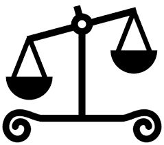

<div id="jsn-maincontent" class="span9 order1 row-fluid">
  <div id="jsn-maincontent_inner">
    <div id="jsn-centercol">
      <div id="jsn-centercol_inner">
        <div id="jsn-mainbody-content" class="jsn-hasmainbody">
          <div id="jsn-mainbody-content-inner1">
            <div id="jsn-mainbody-content-inner2">
              <div id="jsn-mainbody-content-inner3">
                <div id="jsn-mainbody-content-inner4" class="row-fluid">
                  <div id="jsn-mainbody-content-inner" class="span12 order1">
                    <div id="jsn-mainbody">
                      <div id="system-message-container"></div>

                      <div
                        class="item-page"
                        itemscope
                        itemtype="https://schema.org/Article"
                      >
                        <meta itemprop="inLanguage" content="en-GB" />

                        <div itemprop="articleBody">
                          <p></p>
                          <h1 style="text-align: center">PageRank algorithm</h1>
                          <p>
                            <strong>Introduction</strong><br />PageRank is one
                            of a number of algorithms (Maths formulas) that
                            measures how relevant and useful a particular
                            website page is. It is used by Google Search to
                            organise the results of a search into a ranked order
                            of importance and relevance.
                          </p>

                          <p>
                            <strong
                              >How does PageRank work?</strong
                            ><br />PageRank is based around the idea that the
                            more links there are to a web page, the more
                            important it is. If peers link to one of your web
                            pages then it must be a good sign that the web page
                            is probably useful, relevant, up-to-date,
                            informative and worth being higher up a list of
                            results than a web page that has no links to it.
                          </p>
                          <p>
                            PageRank works by assigning a numerical weighting to
                            each web page in a website, looking at, for example,
                            the number and quality of links to each web page
                            (amongst other factors). Each link is considered a
                            'vote' for the web page. It also looks at the number
                            of links on the web page that is linking to a web
                            page it is ranking! This makes a lot of sense; if
                            someone links to a page on your website from one of
                            their web pages, and they have in turn many links
                            from other people to that web page, then they are
                            probably more 'important' or knowledgeable than
                            someone who links to you but has no one linking to
                            them. The web page that linked to you and has also
                            lots of links on their webpage will have a more
                            important vote when it comes to working out the
                            ranking of your web page compared to someone who no
                            one links to. This is true for someone who has a
                            reasonable number of links to other web pages.
                            However, if they start putting too many links on a
                            web page, this is picked up by PageRank and the
                            importance of their vote is decreased. Other factors
                            that might affect a ranking include how frequently a
                            web page is updated, the age of links to and from
                            web pages, how 'good' the domain name is and so on.
                            PageRank is constantly being adapted and improved.
                          </p>
                          <p>
                            You as a website owner can improve your PageRank by
                            swapping links with other genuine and relevant
                            website owners but the easiest way by far is to
                            ensure that your website is so good that people want
                            to keep visiting it and linking to it naturally!
                          </p>
                          <p>
                            <strong>Problems with PageRank</strong
                            ><br />Whenever people work out how an algorithm
                            works, how algorithms are used to rank search engine
                            returns, they can be manipulated. Google Bombs are a
                            case in point. This is where a group of people agree
                            to artificially increase the ranking of a web page
                            by artificially linking words and phrases to it.
                            Google adjusted its algorithms to counter Google
                            bombs but the problem still exists.
                          </p>
                          <p>
                            Link farming is another method used. This is where
                            links are created in web pages to other web pages
                            automatically using software, but without any
                            concern as to how relevant the links are. You may
                            well have come across web pages that are essentially
                            just full of links to other web pages. This may be a
                            link farm. Again, Google is proactive in its fight
                            against link farming but the battle never
                            ends!&nbsp;
                          </p>
                          <p></p>
                        </div>
                      </div>
                    </div>
                  </div>
                </div>
              </div>
            </div>
          </div>
        </div>
      </div>
    </div>
  </div>
</div>
